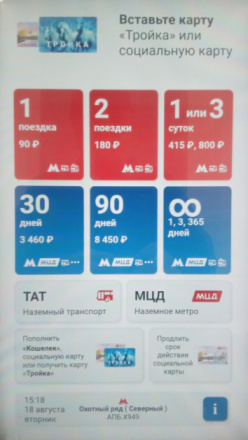

Rusya'ya Gidiş, Vize, Turistik Bilgiler
TR
Seyahat Sigortası
Vize başvurusu öncesi elde olması gereken tek belge sağlık sigortası. Ben GoingRus sitesini kullandım, ücreti fazla değil, Web üzerinden kredi kartı ödemesi yapılınca sigorta size email ile gönderilir. O gönderilen PDF dosyasını bir yazıcıdan bastırmak iyi olur.
https://goingrus.com/en/insurance
Vize
Elektronik vize başvurusu rahat, RU elçiliği ziyareti vs şart değildir. Otel, uçak rezervasyonu yapılmış bile olması gerekmez (sadece sağlık sigortası gerekli), formlar kalınacak adres sorunca kalması planlanan otel ismi, adresi verilebilir.
Başvuru programı bir noktada vesika / yüz resmi, bir diğerinde pasaport resmi isteyecektir. Vesika için biyometrik (tercihen fotoğrafçıda çekilmiş olan) resimlerden birinini telefonla dijital fotosunu alabilirsiniz. Bu fotoyu yanlardan traşlayarak kenarları tam fiziksel fotoda olduğu hale getirilebilir (mesela Gimp programı ile bölge seçimi yapıp 'crop to selection' ile).
Fakat iş hala bitmiş olmuyor, başvuru programı genişlik / yükseklik oranı hakkında çok seçici imiş, muhakkak 35 / 45 oranı gerekiyormuş. Bu durumda dijital fotoyu doğru orana getirmek için
convert input.jpg -resize 700x900^ -gravity center -extent 700x900 output.jpg
komutu kullanılır.
Pasaport resmi için böyle bir şart yok, onu da benzer şekilde telefon ile fotolayıp, o dijital resmi traşlayıp yükleyebiliriz. Pasaport resmi için tek yapılması gereken seri no'sunun yükleme programının alt kare bölgesine hedeflemek. Site kullanınca görülecektir, pasaport resmi hareket ettirilebiliyor, fotoyu kaydırıp o hücre içine pasaport nosunu getiriyorsunuz.
Geri kalan bilgiler girilip, kredi kartı ile ücret ödemesi yapılıyor, bu kadar. [2-3 gün sonra vize kabulü size email ile gönderilecek, onu PDF dosyasını da yazıcıdan bastırın.
Para
Rusya'da yabancı, TR çıkışlı kredi kartı, banka kartları çalışmıyor. Nakit götürülmesi gerekir, oteli bile telefonla rezervasyon sonrası ödemesini nakit ile orada yaptık. 10000 USD altındaki yolcunun yanında taşıdığı nakitlerin deklere edilmesi gerekmez, en rahat seçenek budur.
TR Havalanı Çıkış
Çıkarken harç ödemesi lazım, bu mobil bankacılık ile yapılabilir (Sabiha Gökçen'deki "harç kioskları" güvenilir degil, ben baktığımda bu aletler çalışmıyordu). Programda "Ödemeler | Harç" seçilir, şehir "İstanbul" seçilir, ilçe herhangi bir ilçe olabilir. Bu ay itibarı ile 1500 TL. Eski günlerde "pul" satan birisi olurdu, o pul pasaport içine konurdu, artık o günler geride kalmış ama hala bir harç alınıyor.
RUSYA
Para
Gelir gelmez havaalanında döviz verip ruble alınır. 100-200'lük kağıt para olması iyi olur, metro için gerekecek. Not: Döviz değişimlerinde bir dükkan aynı kişi için bir günde sadece 400 Euro'luk değişim yapabilir. Daha fazlası gerekirse başka dükkana gidilebilir tabii.
Metro
Seyahat kartı almak için kullanılacak aletin ekranı, başlangıç hali böyle.

Sol üst köşedeki ilk iki seçenek 1 seyahat, 2 seyahat için, yani kart / bilet tek kullanımlık, ya da iki kullanımlık. Turistler için en rahat olanlar bunlar... Birine basıyorsunuz, ardından para veriliyor (ekranda ne yazdığına bakmayın bu noktada, basım ardından hemen para), mesela 1 seyahat seçim sonrası 100 ruble alt sağ köşeden verince, alttan (kağıt) kart ve para üstü alt kısımdaki bölmeye düşüyor. Diğer seçenekler mesela 30 gün, 90 gün, vs. daha uzun süreli ziyaretçiler bunlara bakabilir.
Telefon / Internet
Rusya savaş halinde bir ülke. Ukrayna'nın gönderdiği SİHA'ların GPS kullanması sebebiyle Rusya büyük şehirlerde GPS sinyallerini karıştırıcı teknoloji kullanıyor (jamming). GPS ile konum belirleme büyük şehirlerde işlemiyor. Anladığım kadarıyla Rusya'nın kendi uydu sistemleri GLONASS da bu blokeden nasibini almış, taksiciler, taşıyıcı firmalar durumdan şikayetçi, onlar da konum bilgisine güvenemiyorlar.
Gitmeden önce Web'den baktık, "yapay zeka"'ya sorduk", "mobil gezici (roaming) ayarını yapın, Internet kullanabilirsiniz" gibi yorumlar vardı. Bunlara güvenmeyin. Roaming işlemiyor. Çoğu popüler İnternet sitesi blok halinde, onlara da erişilemiyor. "VPN ile bloku aşarsınız" diyenler var, otelimizin Wifi'i üzerinden birkaç bedava VPN denedik, VPN olmadı.
Eğer RU telefon / mobil / Internet hattı olsa, onun üzerinden cüzi para ödeyip VPN kurulması mümkün imiş (Red Shield?), ama turistik seyahat için bunlarla uğraşmak istemedik. Blok edilmiş siteler, uygulamaların bazıları YouTube, Whatsapp, Telegram, Google Gemini (ama Google Arama, GMail işliyor).
RU on ödemeli (prepaid) SIM kartı alınması uzun iş, geldiğimde havaalanından çıkarken turistler için "geçici" kartlar satan birisini vardı, ama yabancıların SIM alması resmi prosedür gerektiriyor, kart hemen açılıyor(muş) ama otelinizin gerekli bakanlığa kaydınızı bildirmesi gerekiyor. Bu bildirim oteller için kolay bir iş dediler, fakat geçici kart için ne kadar değer mi?
Harita
Benim en çok işime yarayan Maps.Me uygulaması oldu. Bu programın Internet bağlantısına ihtiyacı yoktur, çevrimdışı (offline) çalışabilir. Gitmeden öne TR'de iken gidilecek yerin tüm kısımlarına tıklayıp o bölge bilgilerinin indirilmesi iyi olur. Böylece yer bulunamasa bile önemli nokta, park, müze, cafe isimleri girerek (maps.me arama özelliği) konum yaklaşık olarak bulunabilir.
Uygulamanın sol üst köşesinde katmanlar (layers) kısmında metro haritası katmanı vardır, bu Moskova'da benim çok işime yaradı, tüm hatlar, bağlantılar orada gösteriliyor. Kampçilıktan alışkanlık yanımızda hep taşıdığımız pusula bile ise yaradı, GPS olmayınca güney, kuzey neresidir diye bilmek gerekli olabiliyor.
Ozet
Güvenlik durumu nedir? Büyük şehirlerde bir tehlike yok. Her diğer gün bir yerde duman, patlama duyulması gibi bir durum değil, ama muhakkak savaş durumu, ciddi iş, belli olmaz.
Moskova metrosunun kullanımı rahat, hatlar arası transfer için dışarı çıkılması gerekmez. Yoldan taksi çevirmek zor, durak noktalarına gitmek lazım, bu noktalar Maps.Me uygulamasında gösteriliyor.
Kaynaklar
Yukarı